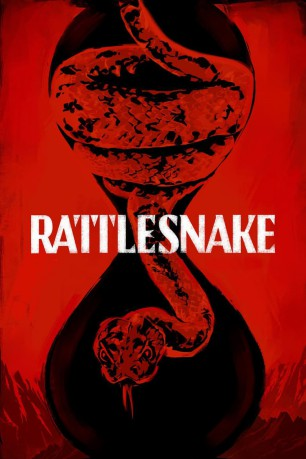

IMDB-Wertung: 4.5 / 10
IMDB-Wertung: 4.5 / 10  Tomatometer: 43
Tomatometer: 43  Metascore:
Metascore: 
Eine rätselhafte Fremde hat ihre Tochter vor einem tödlichen Schlangenbiss gerettet. Als Gegenleistung muss die Mutter das Unaussprechliche tun.
Alternativ: Rattlesnake (Englischer Titel)
 IMDB-Wertung: 4.5 / 10 Tomatometer: 43 Metascore:
Eine rätselhafte Fremde hat ihre Tochter vor einem tödlichen Schlangenbiss gerettet. Als Gegenleistung muss die Mutter das Unaussprechliche tun.
Jahr: 2019
Dauer: 85 Minuten
FSK:
Land: USA Studio: NetflixTonspuren: - , - ,
Untertitel: Deutsch, Englisch,
Auflösung: 1080p (1920x1080) Größe: 2672 MB
Genre: Thriller, Horror, Drama, Mystery
Regisseur: Zak Hilditch
Drehbuch: Zak Hilditch
Soundtrack: Ian Hultquist
Darsteller:
 Rio Alexander als Trucker (uncredited)
Rio Alexander als Trucker (uncredited)Datei: X:\2019(A-F)\Biss der Klapperschlange, Der (2019, FSK, 1920x1080).mkv seit 26.10.2019
Festplatte: HD 2018(G-Z)-2019(A-Z)
 Es gibt insgesamt 60 Filme in der Gruppe '2019(A-F)'
Es gibt insgesamt 60 Filme in der Gruppe '2019(A-F)'